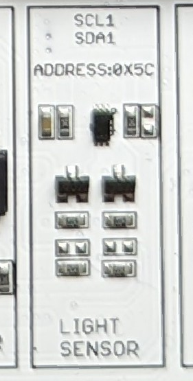

4. Licht messen und auswerten¶
In dieser Lektion lernen wir, wie man die Lichtstärke mit Hilfe eines Lichtsensor (APDS-9002) misst und erkennt. Aber zuerst: Was ist ein Lichtsensor und wie funktioniert er?

Der Lichtsensor auf dem CrowPi2 ist ein wenig schwer zu erkennen, er befindet sich befindet sich zwischen der RFID und dem LCD, auf dem PCB steht light sensor.
Der Lichtsensor verwendet einen Lichtstromsensor, und reflektiert die Lichtstärke der Umgebung durch den den linearen Ausgangspegel, der direkt die Veränderung des Lichtstroms widerspiegeln kann. Das Licht-Spektrum des Sensors ist dem des menschlichen Auges sehr ähnlich. Das sit zum Beispiel für den Einsatz der im Bereich der künstlichen Intelligenz nützlich. Der Sensor ist weit verbreitet in der Landwirtschaft, Forstwirtschaft, Gewächshäusern, Zucht, Gebäudebeleuchtung, Messung und Forschung.
Zur Steuerung des Lichtsensors verwenden wir das 12C-Protokoll.
Um die die ganze Sache einfacher zu machen, werden wir eine Bibliothek namens sm bus verwenden, um direkt auf 12C zuzugreifen und die Daten zu erhalten.
Dafür haben wir eine eine spezielle Klasse erstellt…..
Aber jetzt wird alles die Schritt für Schritt erklärt.
4.1. Wann gehst du schlafen?¶
In unserem Beispiel nehmen wir das Szenario der Schlafenszeitbenachrichtigung. Woher weist du, dass es Zeit ist, ins Bett zu gehen? Wenn es es dunkel wird, weist du, dass es Nacht ist und gehst schlafen. Wir verwenden den Lichtsensor, um zu erkennen, ob es dunkler wird und senden eine Alarmbenachrichtigung mit dem Buzzer, damit du weißt, dass es Zeit zum Schlafen ist - Wie ein umgekehrter Wecker. Gleichzeitig werden wir die Situation mit Hilfe des LCD überwachen, wie wir es in unseren vorherigen Lektionen getan haben.
Zunächst importieren wir die erforderlichen Bibliotheken.
Wir haben bereits die LCD-Bibliothek, die GPIO-Bibliothek und die Zeitbibliothek erwähnt.
Jetzt importieren wir auch eine neue Bibliothek namens smbus um mit dem 12C-Protokoll zu kommunizieren.
import Adafruit_CharLCD as LCD
import RPi.GPIO as GPIO
import smbus
import time
Es mehrere Arten von Raspberry Pi, zum Beispiel Raspberry Pi 3, 4 und Zero. Jede hat eine andere Hardware-Architektur und verschiedene Möglichkeiten, auf den Bustreiber zuzugreifen. Um den richtigen Weg zu wählen, müssen wir die Revision des Raspberry Pi herausfinden. Glücklicherweise können wir dies mit dem folgenden Code automatisieren:
if(GPIO.RPI_REVISION == 1):
bus = smbus.SMBus(0)
else:
bus = smbus.SMBus(1)
Dies wird automatisch den richtigen Treiber für uns auswählen, basierend auf der GPIO-Architektur des Raspberry Pi, den wir verwenden. Als nächstes definieren wir den Summer, der uns benachrichtigen soll, wenn das das Licht zu schwach wird, was bedeutet, dass es für uns Zeit ist, ins Bett zu gehen.
buzzer_pin = 18
GPIO.setmode(GPIO.BCM)
GPIO.setup(buzzer_pin, GPIO.OUT)
Zuvor haben wir die LCD-Klasse erstellt, um den LCD-Monitor zu steuern, schreiben wir die Klasse erneut, damit wir auf dem LCD-Monitor die Menge an Licht im Raum anzeigen können. Definieren wir zunächst die Klasse mit den LCD-Eigenschaften wie Adresse, Spalten und Zeilen:
class LCDModule():
def __init__(self):
# Define LCD column and row size for 16x2 LCD.
self.address = 0x21
self.lcd_columns = 16
self.lcd_rows = 2
# Initialize the LCD using the pins
self.led = LCD.Adafruit_CharLCDBackpack(address=self.address)
Definieren wir nun die Funktion turn_off um die LCD Hintergrundbeleuchtung auszuschalten.
def turn_off(self):
# Turn back light off
self.lcd.set_backlight(1)
Wir haben das Ausschalten hinzugefügt, jetzt fügen wir die Funktion turn_on hinzu, um um die Hintergrundbeleuchtung einzuschalten.
def turn_on(self):
# Turn back light on
self.lcd.set_backlight(0)
Fügen wir eine Funktion zum Löschen des LCD-Monitors hinzu.
def clear(self):
# clear the LCD screen
self.led.clear()
Die letzte Funktion ist die Funktion write_lcd, die unsere Daten in den LCD-Monitor schreibt.
def write_lcd(self,text):
# turn on LCD
self.turn_on ()
# wait 0.1 seconds
time.sleep(0.1)
# Print a two line message
self.lcd.message(text)
# wait 3 seconds
time.sleep(1)
# clear screen
self.clear()
# wait 0.1 seconds
time.sleep(0.1)
# turn off LCD
self.turn_off()
Eine neue Klasse, die wir hinzufügen müssen, ist eine Klasse, um Lichtmenge vom Lichtsensor zu erhalten. Fügen wir zuerst die Klasse ein und erklären dann, was vor sich geht.
class LightSensor():
def __init__(self):
# Define some constants from the datasheet
self.DEVICE = 0x5c # Default device I2C address
self.POWER_DOWN = 0x00 # No active state
self.POWER_ON = 0x01 # Power on
self.RESET = 0x07 # Reset data register value
# Start measurement at 4lx resolution. Time typically 16ms.
self.CONTINUOUS_LOW_RES_MODE = 0x13
# Start measurement at 1lx resolution. Time typically 120ms
self.CONTINUOUS_HIGH_RES_MODE_1 = 0x10
# Start measurement at 0.5lx resolution. Time typically 120ms
self.CONTINUOUS_HIGH_RES_MODE_2 = 0x11
# Start measurement at 1lx resolution. Time typically 120ms
# Device is automatically set to Power Down after measurement.
self.ONE_TIME_HIGH_RES_MODE_1 = 0x20
# Start measurement at 0.5lx resolution. Time typically 120ms
# Device is automatically set to Power Down after measurement.
self.ONE_TIME_HIGH_RES_MODE_2 = 0x21
# Start measurement at 1lx resolution. Time typically 120ms
# Device is automatically set to Power Down after measurement.
self.ONE_TIME_LOW_RES_MODE = 0x23
Dann wollen wir eine Funktion erstellen, die den vom Lichtsensor erhaltenen Wert Lichtsensor in lesbare Daten umwandelt.
def convertToNumber(self, data):
# Simple function to convert 2 bytes of data
# into a decimal number
return ((data[1] + (256 * data[0])) / 1.2)
Zum Schluss schreiben wir die eigentliche Funktion zum Lesen von Daten aus dem Sensor selbst.
def readLight(self):
data = bus.read_i2c_block_data(self.DEVICE,self.ONE_TIME_HIGH_RES_MODE_1)
return self.convertToNumber(data)
4.2. Code-Analyse¶
Der gesamte Code ist sehr deutlich kommentiert, aber lasst es uns trotzdem erklären: wir haben ein paar Funktionen, die wichtigste ist das Lesen des Lichts und dazu benutzen wir den Befehl bus.read_i2c_block_data.
Die Werte, die wir vom Busdriver erhalten, sagen uns nicht viel also müssen wir sie in eine lesbare Zahl umwandeln.
Dafür verwenden wir den convertToNumber-Befehl, mit dem wir die Bytes in Dezimalzahlen umwandeln.
In der Initialisierungsfunktion der Klasse definieren wir alles, auf das wir auf dem Gerät zugreifen müssen, wie z.B. die Messauflösung, das Ausschalten des Geräts nach der Messung und so weiter….
Definieren wir nun eine kleine buzz()-Funktion, die den Buzzer anruft, wenn wenn das Licht ausgeht, um uns mitzuteilen, dass es Zeit ist, schlafen zu gehen.
4.3. Der Buzzer¶
def buzz():
# Make buzzer sound
GPIO.output(buzzer_pin, GPIO.HIGH)
time.sleep(0.5)
GPIO.output(buzzer_pin, GPIO.LOW)
Wenn wir die Funktion buzz() aufrufen, schaltet sich der Summer für eine halbe Sekunde ein und schaltet sich dann aus, um anzuzeigen, dass es Zeit ist, schlafen zu gehen.
Definieren wir nun den Lichtsensor und das LCD zur Überwachung der Messwerte.
Wir verwenden die LightSensor()-Bibliothek, um das Licht zu messen und die LCD-Modul-Bibliothek, um die Daten auf das LCD zu schreiben.
Wir konfigurieren auch einen Wert dafür, was für uns schwaches Licht bedeutet indem wir den low_light-Wert auf 40 setzen.
# define light sensor
sensor = LightSensor()
# define LCD module
lcd_screen = LCDModule()
# configure low light
low_light = 40
4.4. Code-Hochzeit¶
Lasst uns nun den Hauptcode schreiben und erklären, was er tut.
while True:
sensor_data = sensor.readLight()
lcd_screen.write_lcd(text="Light Level:\n%slx" % sensor_data)
print("Light Level : " + str(sensor_data) + " lx")
if(sensor_data < 40):
# the light level is too low, activate buzzer
buzz()
time.sleep(0.5)
Zunächst beginnen wir mit einer while-Schleife, um die Echtzeitdaten von unserem Lichtsensor kontinuierlich zu erfassen.
Dann lesen wir die Sensordaten mit der Funktion readlight() und schreiben die Werte auf das LCD, damit wir sie leicht sehen können.
Wir geben sie auch auf der Konsole aus.
Führen wir endlich das Skript aus und sehen uns die Lichtdaten an, die auf dem Terminal angezeigt werden. Du wirst feststellen, dass der Buzzer dich ans SChlafengehen erinnert, wenn die Lichtdaten im Zimmer niedriger als 40 sind.
Großartig! Eine weitere Lektion abgeschlossen! Versuche, die Low-Level-Wertanzeige oder sogar den Code zu ändern, um ihn in einen Morgen-Alarm umzuwandeln, wenn die Sonne wieder aufgeht!